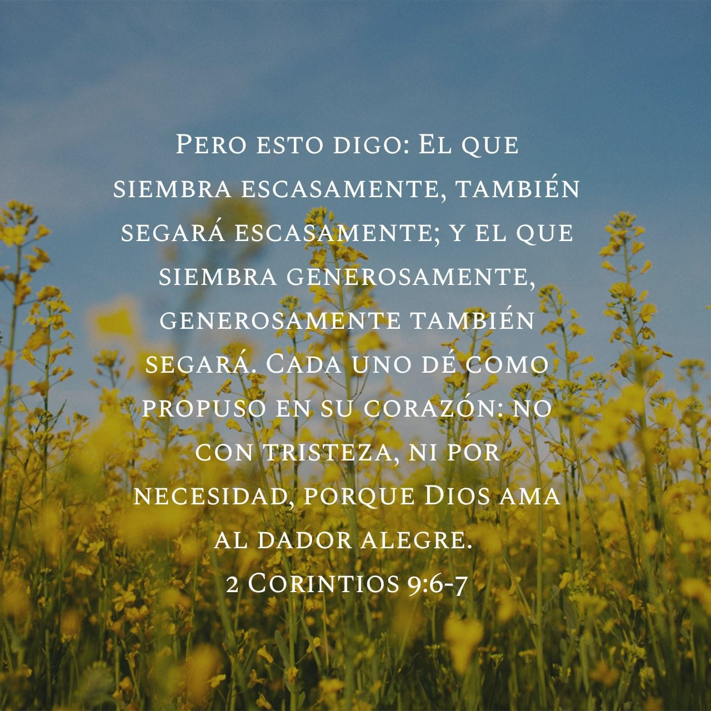

Ministerio Cristiano AGAPE, MDS
Mas Dios muestra su amor para con nosotros, en que siendo aún pecadores, Cristo murió por nosotros. Romanos 5:8
Se parte de nuestro Ministerio y así edificarnos juntos y que la Gracia del Senor te acompañe.
Sobre Nosotros
Hola, somos el Ministerio Cristiano AGAPE MDS (Monte De Sion) y pertenecemos a la Red Internacional de Ministerios Monte De Sion con sede en Greenacres Florida. Como parte de la Red tenemos Ministerios en Honduras y México . También la Red consta con Instituto Teológico MDS el cual ofrece hasta cuatro años de estudios Bíblicos avalados por la Universidad Cristiana Logos. Nuestros ministerios tienen el propósito de extender la obra de Cristo a través de la edificación de los obreros para esta, como mencionó el Apóstol Pablo en su carta a los Efesios.
Efesios 4: 11-12 Él mismo constituyó a unos, apóstoles; a otros, profetas; a otros, evangelistas;· ya otros, pastores y maestros a fin de capacitar al pueblo de Dios para la obra de servicio, para edificar el cuerpo de Cristo. (NVI)
Cristo es el centro de nuestro mensaje, con el conocimiento de que Cristo mismo exaltó al Padre, nuestro Dios y nos dió el Espíritu Santo como guía, consuelo y promesa. Efesios 2:8 'Porque por gracia ustedes han sido salvados mediante la fe; esto no procede de ustedes, sino que es el regalo de Dios, '(NVI)
Nuestro ministerio y actividades promueven el desarrollo y preservación de la familia Cristiana, y la unidad del cuerpo de Cristo en el Espíritu Santo y fundamentados en la santa verdad que es la Biblia. Buscando así el edificarnos como un solo cuerpo en Cristo Jesus.
Gracia y Paz en Cristo Jesús tengan todos,
Pastor Luis Gonzalez
Contacto
Para contactarnos puede escribirnos a nuestro correo electronico: ministerioagapemds@gmail.com
Horarios
Miércoles
Estudios Bíblicos por Cisco Webex a las 7:00 PM EST. Para más información sobre como asistir a nuestros estudios bíblicos, presione aquí.
Domingos
Servicio de Adoración y Predicación en Vivo a las 11:45 AM.
Ofrendas
En Vivo
¡Únete a nuestros eventos en vivo y síguenos en nuestras plataformas sociales para estar conectados!